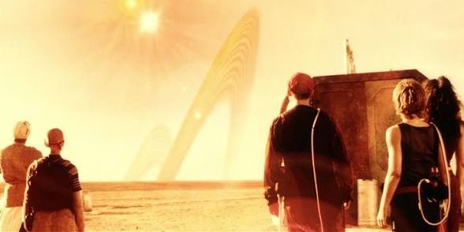

PITCH BLACK (2000) — CERTIFIED MGC XF-44

🏛 Movie Grading Consensus™ (MGC) Tribunal Docket
- ASSET TITLE: Pitch Black (2000)
- INITIAL INQUEST GRADE BOARDS: XF-42 Baseline (Extremely Fine Territory — Pending Appellate Overrides)
- BENCH JURISDICTION: Lower Tribunal / Sci-Fi Survival-Horror Docket
- CASE FILE: #046
- PRESIDING: Judge Mina, Chief Grader MGC
📜 THE INITIAL INQUEST BENCH ASSESSMENT (3-FLAW DEFECT LOG)
1. The Bio-Raptor Swarm Rendering (Digital Luster Wear)
-
The Defect:
The digital modeling and animation of the predatory creature swarms during wide aerial shots. -
The Forensic Data:
Under the 5x lens, the early 2000s CGI shows distinct surface scaling. The digital assets lack the fluid motion physics and complex shadow mapping found in modern strikes, creating a localized visual blemish whenever the swarm takes flight in large numbers.
2. The Bleach-Bypass Contrast Fatigue (Visual Surface Texture)
-
The Defect:
Aggressive overexposure and intense color-filtering during the film’s three-sun daylight sequences. -
The Forensic Data:
The severe blue, yellow, and monochrome tinting creates a harsh visual friction. While striking at first, the extreme saturation levels cause slight contrast fatigue across the first act, masking fine background details in a heavy photographic wash.
3. The Standard Cargo-Ship Manifest Archetypes (Narrative Handling Marks)
-
The Defect:
The predictable character archetypes filling out the commercial transport crew and passenger list. The Forensic Data:
Aside from Riddick, Johns, and Fry, the supporting roster (the cowardly merchant, the religious travelers, the antique collector) introduces standard survival-horror handling marks to the script. Their structural beats follow a highly predictable trajectory once the eclipse hits, leaning into formulaic genre theater.
CHIEF JUSTICE OVERRULING DECREE
1. The Bio-Raptor Swarm Rendering (Digital Luster Wear): OVERRULED
- The visual presentation is validated under the context of Riddick’s unique optical perspective and the environmental anomalies of a foreign solar system. The asset’s localized rendering quirks are cleared of structural wear given the distinct planetary atmosphere, gravity, and multi-sun lighting configuration.
2. The Bleach-Bypass Contrast Fatigue (Visual Surface Texture): OVERRULED
- The harsh, high-contrast photographic saturation is completely sustained as an authentic environmental strike. Because the asset is explicitly framed on an extra-solar planet rather than Earth, the intense visual texture is recognized as intentional world-building rather than technical fatigue.
3. The Standard Cargo-Ship Manifest Archetypes (Narrative Handling Marks): SUSTAINED
- The predictable layout of the supporting crew is sustained on the ledger, though noted by the Court as a positive genre mechanic. The structural predictability provides an optimized baseline that enhances the audience’s investment in the survival-horror dynamic.
⚖️ FINAL COURT DECREE
- With two major technical objections entirely thrown out by the Chief Justice and the narrative handling marks recontextualized as a net positive for genre execution, the structural performance of this independent sci-fi alloy shines remarkably clear under the lens.
- Pitch Black (2000) officially breaks past its lower-tier baseline floor and is permanently slabbed, sealed, and archived in the registry as an elite, high-luster MGC XF-44 Choice Extremely Fine Specimen! Case #046 is officially shut and logged into the live database. ⚖🪐💀🎛💥

• © 2026 MOVIE GRADING CONSENSUS. All Sovereign Rights Reserved.